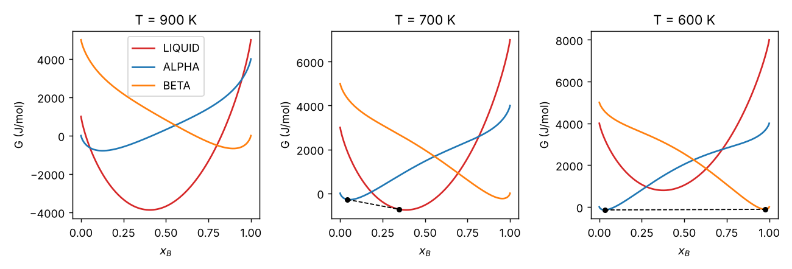
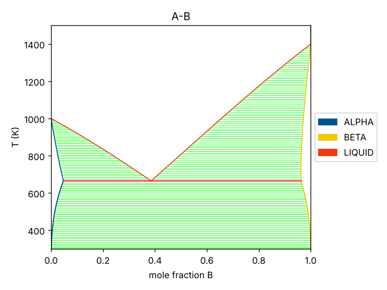
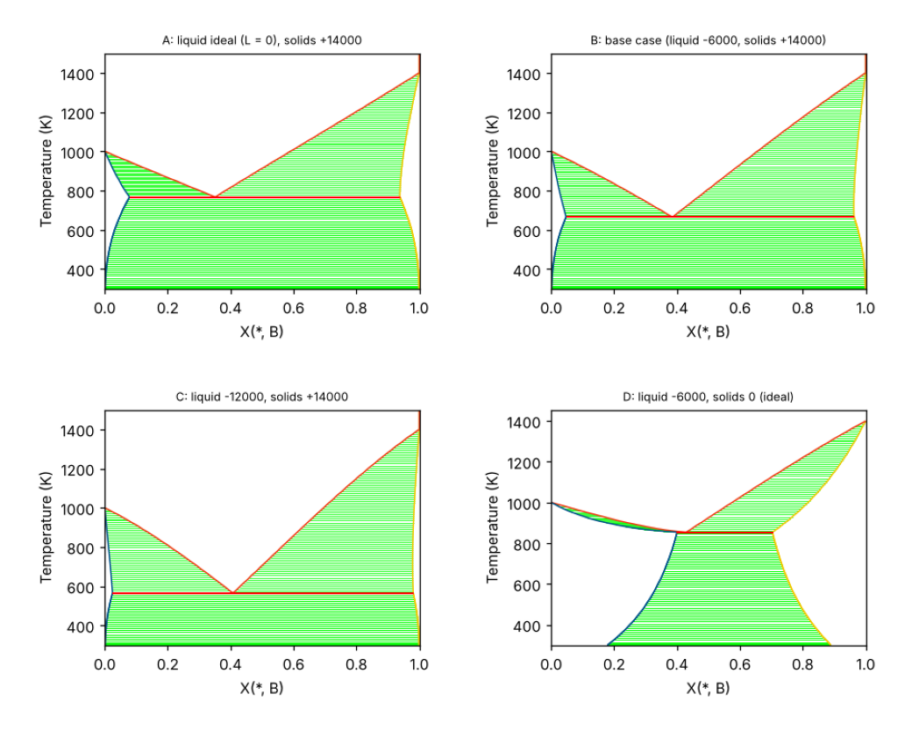

Curriculum/Computational labsLAB 505
Lab: Phase diagrams with CALPHAD and pycalphad
CALPHAD (calculation of phase diagrams) is the method that metallurgists and ceramists use to compute phase equilibria for real multicomponent materials: steels, aluminium alloys, superalloys, solders, glasses. The idea is to write the Gibbs energy of every phase as a function of temperature and composition with a modest number of fitted parameters, and then to minimise the total Gibbs energy. This lab uses pycalphad, a free Python implementation, with a small database that we write ourselves for a fictitious A–B eutectic system. A database that you wrote yourself has the advantage that you can predict, from the parameters, every number the software returns.
- Reading time
- about 26 min
- Leads to
- —
- Level
- Graduate: simulation methods
- Read the structure of a TDB file: elements, functions, phases and parameters.
- Compute and plot Gibbs-energy curves, and relate the stable phases to the common tangent.
- Calculate equilibria (phases, amounts, compositions) and check them with the lever rule.
- Plot a binary phase diagram and understand how it responds to the interaction parameters.
- Simulate solidification with the lever rule and the Scheil model, and say when each is appropriate.
- Avoid the common mistakes (wrong reference state, extrapolation, missing parameters).
Step 1. Install#
python3 -m venv ~/venvs/calphad && source ~/venvs/calphad/bin/activate
pip install pycalphad matplotlib numpy
python -c "import pycalphad; print(pycalphad.__version__)"0.11.2pycalphad reads standard TDB files, so the same database works in the commercial programs Thermo-Calc and FactSage (the syntax comes from the Thermo-Calc user community). Real databases are published for example by the NIMS and by the CALPHAD community (for instance the NIST and the TDBDB repositories); the open-source OpenCalphad is another free engine.
Step 2. A thermodynamic database written by hand#
The Gibbs energy per mole of atoms of a substitutional solution phase $\varphi$ with the elements A and B is
$$G^\varphi_m=x_A\,{}^0G^\varphi_A+x_B\,{}^0G^\varphi_B+RT\,(x_A\ln x_A+x_B\ln x_B)+x_Ax_B\,L^\varphi_{AB},$$
where ${}^0G^\varphi_i$ is the Gibbs energy of the pure element $i$ in the structure $\varphi$ (the “lattice stability”),\allowbreak the second term is the ideal entropy of mixing,\allowbreak and $L_{AB}$ is the regular-solution interaction parameter (in general a Redlich–Kister polynomial in $x_A-x_B$ and temperature; <a href="thermodynamics-and-calphad.html">MSE 301</a>). A positive $L$ means that A–B bonds are less favourable than the average of A–A and B–B (a tendency to separate); a negative $L$ the opposite. The file teach.tdb contains the three phases LIQUID, ALPHA (the structure of A) and BETA (the structure of B):
$ Teaching database for a binary A-B eutectic system (NOT a real alloy).
$ Energies in J/mol, T in K. Reference state: the stable phase of each element at 0 K is zero.
ELEMENT /- ELECTRON_GAS 0.0000E+00 0.0000E+00 0.0000E+00 !
ELEMENT VA VACUUM 0.0000E+00 0.0000E+00 0.0000E+00 !
ELEMENT A ALPHA_REF 1.0000E+01 5.0000E+03 3.0000E+01 !
ELEMENT B BETA_REF 1.0000E+01 5.0000E+03 3.0000E+01 !
$ Gibbs energy of each element in each phase, relative to the stable solid (alpha for A, beta for B)
FUNCTION GA_ALPHA 298.15 0; 6000 N !
FUNCTION GA_BETA 298.15 5000; 6000 N !
FUNCTION GA_LIQ 298.15 10000 - 10*T; 6000 N !
FUNCTION GB_ALPHA 298.15 4000; 6000 N !
FUNCTION GB_BETA 298.15 0; 6000 N !
FUNCTION GB_LIQ 298.15 14000 - 10*T; 6000 N !
TYPE_DEFINITION % SEQ * !
PHASE LIQUID % 1 1.0 !
CONSTITUENT LIQUID :A,B: !
PHASE ALPHA % 1 1.0 !
CONSTITUENT ALPHA :A,B: !
PHASE BETA % 1 1.0 !
CONSTITUENT BETA :A,B: !
PARAMETER G(LIQUID,A;0) 298.15 GA_LIQ; 6000 N !
PARAMETER G(LIQUID,B;0) 298.15 GB_LIQ; 6000 N !
PARAMETER L(LIQUID,A,B;0) 298.15 -6000; 6000 N !
PARAMETER G(ALPHA,A;0) 298.15 GA_ALPHA; 6000 N !
PARAMETER G(ALPHA,B;0) 298.15 GB_ALPHA; 6000 N !
PARAMETER L(ALPHA,A,B;0) 298.15 +14000; 6000 N !
PARAMETER G(BETA,A;0) 298.15 GA_BETA; 6000 N !
PARAMETER G(BETA,B;0) 298.15 GB_BETA; 6000 N !
PARAMETER L(BETA,A,B;0) 298.15 +14000; 6000 N !Reading it line by line:
ELEMENTlines declare the elements (and the special entriesVAfor vacancies, used by interstitial models, and/-for electrons). The three numbers are the reference-state data; they are not used for equilibrium calculations.FUNCTION name T_low expression; T_high N !defines a reusable expression valid from $T_\mathrm{low}$ to $T_\mathrm{high}$ (here 298.15 to 6000 K). The functions are the Gibbs energies of the pure elements relative to the stable solid at 0 J:GA_LIQ = 10000 - 10*Tmeans that melting of A has $\Delta H=10\,000$ J/mol and $\Delta S=10$ J/mol/K, so that $T_m^A=\Delta H/\Delta S=1000$ K; for B, $14\,000-10T$ gives $T_m^B=1400$ K. The metastable structures cost energy: B in the alpha structure $+4000$, A in the beta structure $+5000$ J/mol.TYPE_DEFINITION % SEQ * !andPHASE name % 1 1.0 !declare a phase with one sublattice of one site.CONSTITUENT name :A,B: !lists the species on that sublattice.PARAMETER G(phase,element;0)assigns the pure-element energy;PARAMETER L(phase,A,B;0)is the interaction parameter. The value is $-6000$ for the liquid (A–B attraction: stabilises the liquid, which lowers the melting temperature of both elements and creates the eutectic) and $+14\,000$ for the solids (a tendency to separate, so the solid solubilities are small).- Every line ends with
!. Comments start with$</code>.</li> </ul> <p>If you omit the <code>TYPE_DEFINITION</code> line,\allowbreak pycalphad still loads the file but prints the warning <em>The type definition character `%` was defined in the following phases ...,\allowbreak but no corresponding TYPE_DEFINITION line was found</em>; it is harmless here,\allowbreak but a missing type definition for a magnetic or ordering model makes the results wrong.</p> <h2 id="eq">Step 3. The first equilibrium calculation</h2> <p>The function <code>equilibrium(db, components, phases, conditions)</code> minimises the Gibbs energy under the conditions $T$, $P$, $N$ and the mole fraction. The helpertools505.pywraps it and returns the stable phases with their amounts and compositions:"""Small helpers around pycalphad used by the scripts of this lab.""" import warnings; warnings.filterwarnings("ignore") import numpy as np from pycalphad import Database, equilibrium, variables as v PHASES = ["LIQUID", "ALPHA", "BETA"] def load(path="teach.tdb", subs=None): text = open(path).read() for old, new in (subs or {}).items(): assert old in text, old text = text.replace(old, new) return Database(text) def state(db, xB, T): """Stable phases at (x_B, T): list of (phase, amount, x_B in that phase).""" eq = equilibrium(db, ["A", "B", "VA"], PHASES, {v.X("B"): xB, v.T: T, v.P: 101325, v.N: 1}) ph = eq.Phase.values.squeeze(); np_ = eq.NP.values.squeeze(); xs = eq.X.sel(component="B").values.squeeze() out = [] for p, n, x in zip(np.atleast_1d(ph), np.atleast_1d(np_), np.atleast_1d(xs)): if p != "" and not np.isnan(n) and n > 1e-6: out.append((str(p), float(n), float(x))) return out"""Equilibrium calculations: phases, amounts and compositions; the lever rule; and the eutectic point.""" import numpy as np from tools505 import * db = load() print("alloy x_B = 0.20 on cooling") print(" T (K) phases (amount, x_B in the phase)") for T in (1100, 900, 850, 800, 700, 680, 660, 600, 400): s = state(db, 0.20, T) print(" %5d " % T + " ".join("%s %.3f (%.3f)" % (p, n, x) for p, n, x in s)) # lever rule check at 800 K s = state(db, 0.20, 800); d = {p: (n, x) for p, n, x in s} xl, xa = d["LIQUID"][1], d["ALPHA"][1] print("\nlever rule at 800 K: x_L = %.4f, x_alpha = %.4f -> f_L = (0.20 - x_alpha)/(x_L - x_alpha) = %.4f ; pycalphad: %.4f" % (xl, xa, (0.20 - xa) / (xl - xa), d["LIQUID"][0])) # eutectic temperature: lowest T at which the liquid is stable for x_B = 0.385 (scan down) print("\nscan of the alloy x_B = 0.385 through the eutectic") for T in np.arange(672, 658, -2.0): s = state(db, 0.385, T) print(" T = %5.1f " % T + " ".join("%s %.3f" % (p, n) for p, n, x in s))alloy x_B = 0.20 on cooling T (K) phases (amount, x_B in the phase) 1100 LIQUID 1.000 (0.200) 900 LIQUID 1.000 (0.200) 850 LIQUID 1.000 (0.200) 800 ALPHA 0.185 (0.026) LIQUID 0.815 (0.240) 700 ALPHA 0.483 (0.041) LIQUID 0.517 (0.348) 680 ALPHA 0.522 (0.045) LIQUID 0.478 (0.370) 660 ALPHA 0.832 (0.046) BETA 0.168 (0.964) 600 ALPHA 0.821 (0.032) BETA 0.179 (0.975) 400 ALPHA 0.803 (0.005) BETA 0.197 (0.997) lever rule at 800 K: x_L = 0.2396, x_alpha = 0.0261 -> f_L = (0.20 - x_alpha)/(x_L - x_alpha) = 0.8145 ; pycalphad: 0.8145 scan of the alloy x_B = 0.385 through the eutectic T = 672.0 LIQUID 1.000 T = 670.0 LIQUID 1.000 T = 668.0 LIQUID 1.000 T = 666.0 LIQUID 1.000 T = 664.0 ALPHA 0.631 BETA 0.369 T = 662.0 ALPHA 0.631 BETA 0.369 T = 660.0 ALPHA 0.630 BETA 0.370Follow the alloy $x_B=0.20$ as it cools: it is liquid at $850$ K and above; at $800$ K the solid alpha ($x_B=0.026$, $18.5\%$) coexists with the liquid ($x_B=0.240$); the liquid becomes richer in B as the temperature falls ($0.348$ at $700$ K, $0.370$ at $680$ K) while alpha takes in more B. Just below $665$ K the liquid has disappeared and the alloy is alpha $+$ beta. Below this the solubility of B in alpha falls from $0.046$ at $660$ K to $0.005$ at $400$ K, and the fraction of beta rises (retrograde solubility: the precipitation of beta from supersaturated alpha, the basis of age hardening).
The lever rule is not an extra approximation, it follows from mass balance: with $x_0$ the overall composition and $x_\alpha$, $x_L$ the compositions of the two phases, $f_L=(x_0-x_\alpha)/(x_L-x_\alpha)$. At $800$ K, $(0.20-0.0261)/(0.2396-0.0261)=0.8145$, identical to the amount that the minimiser reports. The last block shows the eutectic reaction: at $666$ K the alloy $x_B=0.385$ is entirely liquid and at $664$ K it is $63\%$ alpha $+$ $37\%$ beta with no liquid, so the eutectic temperature lies between $664$ and $666$ K; in the next step the same temperature appears in the diagram.
Step 4. Gibbs-energy curves and the common tangent#
The function
calculateevaluates $G_m$ of one phase on a grid of compositions without minimising anything. Plotting the three curves and drawing the tangent shared by the phases that are present reproduces the textbook construction:"""Gibbs energy curves of the three phases and the common tangent construction at three temperatures.""" import warnings; warnings.filterwarnings("ignore") import numpy as np, matplotlib matplotlib.use("Agg") import matplotlib.pyplot as plt from pycalphad import calculate from tools505 import load, state, PHASES db = load() fig, axes = plt.subplots(1, 3, figsize=(10, 3.4)) for ax, T in zip(axes, (900, 700, 600)): curves = {} for ph, c in zip(PHASES, ("tab:red", "tab:blue", "tab:orange")): r = calculate(db, ["A", "B", "VA"], ph, T=T, P=101325, N=1, pdens=400) x = r.X.sel(component="B").values.squeeze(); G = r.GM.values.squeeze(); o = np.argsort(x) curves[ph] = (x[o], G[o]); ax.plot(x[o], G[o], color=c, label=ph) xo = 0.2 if T > 650 else 0.5 # an overall composition inside the two-phase region s = state(db, xo, T) print("T = %d K, overall x_B = %.2f: %s" % (T, xo, ", ".join("%s x=%.3f" % (p, x) for p, n, x in s))) if len(s) == 2: # common tangent through the two equilibrium compositions pts = [(x, np.interp(x, *curves[p])) for p, n, x in s] ax.plot([pts[0][0], pts[1][0]], [pts[0][1], pts[1][1]], "k--", lw=1); ax.plot(*zip(*pts), "ko", ms=4) ax.set_title(f"T = {T} K"); ax.set_xlabel("$x_B$"); ax.set_ylabel("G (J/mol)") axes[0].legend(); fig.tight_layout(); fig.savefig("gibbs.png", dpi=130)T = 900 K, overall x_B = 0.20: LIQUID x=0.200 T = 700 K, overall x_B = 0.20: ALPHA x=0.041, LIQUID x=0.348 T = 600 K, overall x_B = 0.50: ALPHA x=0.032, BETA x=0.975
Molar Gibbs energy curves of the three phases at three temperatures. Dashed line: the common tangent; its contact points are the equilibrium compositions. At $900$ K the liquid curve lies below the other two from near pure A up to $x_B\approx0.8$, so the liquid is the stable phase there; only close to pure B does the beta curve go below it. At $700$ K the alpha and liquid curves have a common tangent between $x_B=0.041$ and $0.348$; an alloy with overall composition in that range minimises its energy by splitting into those two phases (the dashed line is below both curves). At $600$ K the liquid has left the stage: the common tangent now connects alpha ($0.032$) and beta ($0.975$). The slopes of the tangent are the chemical potentials, equal in both phases ($\mu_A$ and $\mu_B$ are the intercepts at $x_B=0$ and $1$): that is the condition of equilibrium.
Step 5. The phase diagram#
The phase diagram is just the common-tangent construction repeated on a grid of temperatures, and pycalphad does it with
binplot:"""Binary phase diagram of the teaching database with pycalphad.""" import matplotlib; matplotlib.use("Agg") import matplotlib.pyplot as plt from pycalphad import Database, binplot, variables as v db = Database("teach.tdb") ax = binplot(db, ["A", "B", "VA"], ["LIQUID", "ALPHA", "BETA"], {v.X("B"): (0, 1, 0.01), v.T: (300, 1500, 10), v.P: 101325, v.N: 1}) ax.set_xlabel("mole fraction B"); ax.set_ylabel("T (K)") ax.figure.set_size_inches(6, 4.5); ax.figure.tight_layout(); ax.figure.savefig("diagram.png", dpi=130) print("saved diagram.png")
Phase diagram computed from teach.tdb: a eutectic at about 665 K and $x_B=0.385$ between two terminal solid solutions.Read the diagram: the liquidus descends from $1000$ K (melting of A) and $1400$ K (melting of B) to the eutectic point at about $665$ K and $x_B\approx0.385$, where liquid, alpha and beta coexist (a horizontal line, three phases: zero degrees of freedom at fixed pressure by the Gibbs phase rule). The solid solutions are narrow because the solid interaction parameter is large and positive: alpha dissolves up to $x_B=0.046$ and beta up to $0.964$ at the eutectic temperature; the solvus lines bend toward the pure elements as the temperature falls. The eutectic temperature ($665$ K) is $335$ K lower than the melting point of A, a deep eutectic that comes from the combination of the negative liquid parameter and the positive solid ones. In the plotting call, the grid
(0, 1, 0.01)and(300, 1500, 10)sets the resolution: a finer grid gives smoother lines at the cost of time.An empty plotIn the version used here,
binplotcreates its own axes and ignores anax=argument: passing your own axes gave a completely empty figure with no error message. Use the axes object thatbinplotreturns and modify it (ax = binplot(...)). If a plot is empty, first check that a phase list and the components include"VA"as in the TDB, then print the returned object.Step 6. How the parameters shape the diagram#
The most useful numerical experiment with a thermodynamic model is to change one parameter and look at the result. The script modifies the text of the TDB in memory (the file is not changed), finds the eutectic as the lowest temperature at which the liquid is stable on a grid of composition and temperature, and plots four diagrams:
"""How the interaction parameters shape the diagram: eutectic temperature and composition for four parameter sets.""" import warnings; warnings.filterwarnings("ignore") import os import numpy as np, matplotlib matplotlib.use("Agg") import matplotlib.pyplot as plt from pycalphad import equilibrium, binplot, variables as v from tools505 import load, PHASES cases = { "A: liquid ideal (L = 0), solids +14000": {"L(LIQUID,A,B;0) 298.15 -6000": "L(LIQUID,A,B;0) 298.15 0"}, "B: base case (liquid -6000, solids +14000)": {}, "C: liquid -12000, solids +14000": {"L(LIQUID,A,B;0) 298.15 -6000": "L(LIQUID,A,B;0) 298.15 -12000"}, "D: liquid -6000, solids 0 (ideal)": {"L(ALPHA,A,B;0) 298.15 +14000": "L(ALPHA,A,B;0) 298.15 0", "L(BETA,A,B;0) 298.15 +14000": "L(BETA,A,B;0) 298.15 0"}, } def eutectic(db): """Lowest temperature at which the liquid is stable on a grid of composition and temperature, and the composition of the liquid there.""" xs, Ts = np.arange(0.20, 0.70, 0.01), np.arange(1000, 300, -2.0) eq = equilibrium(db, ["A", "B", "VA"], PHASES, {v.X("B"): xs, v.T: Ts, v.P: 101325, v.N: 1}) ph = eq.Phase.values.squeeze() # dimensions: (T, x, vertex) xl = eq.X.sel(component="B").values.squeeze() # composition of each stable phase, same dimensions j = np.argwhere((ph == "LIQUID").any(axis=-1))[:, 0].max() # largest index = lowest T with liquid sel = ph[j] == "LIQUID" return Ts[j], np.nanmean(xl[j][sel]) print("%-46s %10s %9s" % ("case", "T_eut (K)", "x_B,eut")) imgs = [] for k, (name, subs) in enumerate(cases.items()): db = load(subs=subs) Te, xe = eutectic(db) print("%-46s %10.0f %9.3f" % (name, Te, xe), flush=True) ax = binplot(db, ["A", "B", "VA"], PHASES, {v.X("B"): (0, 1, 0.01), v.T: (300, 1500, 10), v.P: 101325, v.N: 1}) ax.set_title(name, fontsize=8) if ax.get_legend(): ax.get_legend().remove() ax.figure.set_size_inches(4, 3.2); ax.figure.tight_layout(); ax.figure.savefig(f"_d{k}.png", dpi=110); plt.close(ax.figure) imgs.append(f"_d{k}.png") fig, axes = plt.subplots(2, 2, figsize=(8, 6.4)) for a, f in zip(axes.flat, imgs): a.imshow(plt.imread(f)); a.axis("off") fig.tight_layout(); fig.savefig("sensitivity.png", dpi=130) for f in imgs: os.remove(f)case T_eut (K) x_B,eut A: liquid ideal (L = 0), solids +14000 768 0.351 B: base case (liquid -6000, solids +14000) 666 0.386 C: liquid -12000, solids +14000 566 0.408 D: liquid -6000, solids 0 (ideal) 856 0.429
Phase diagrams for four sets of interaction parameters (titles give the values in J/mol). The table and the figure show four lessons. (1) The liquid parameter sets the eutectic temperature. Going from $L^\mathrm{liq}=0$ (ideal liquid) to $-6000$ to $-12000$ J/mol lowers the eutectic from $768$ to $666$ to $566$ K, about $100$ K per $6000$ J/mol. An estimate of the same order: the stabilisation of the liquid at $x_B\approx0.4$ is $|L|x_Ax_B=6000\times0.24=1440$ J/mol and the entropy of fusion is $10$ J/mol/K, which would give $144$ K; the actual lowering is less because the solids also adjust. (2) The eutectic composition moves toward the B-rich side ($0.351$, $0.386$, $0.408$) because the more negative liquid parameter favours mixing in the liquid near equal amounts of the two elements. (3) The solid parameter controls the solubility: in case D the two solids have no tendency to separate ($L=0$), and the eutectic moves up to $856$ K with wide solid solutions, which shrink with decreasing temperature into a large two-phase region. At $300$ K the solubilities are still $x_B\approx0.2$ in alpha and $0.9$ in beta, because the only energy penalty of putting B into alpha is the lattice stability $4000$ J/mol, $\exp(-4000/RT)=0.2$ at $300$ K. (4) The diagram is a prediction of the parameters alone: there is no extra information in the plot, which is the reason why assessing a database means finding the parameters that reproduce the measured diagram and thermodynamic data, not copying one.
Step 7. Solidification: equilibrium against Scheil#
A phase diagram describes equilibrium: infinitely slow cooling with complete diffusion in the solid. In a casting, diffusion in the solid is much slower than the growth of the solid, so the first solid keeps its composition and the liquid becomes richer in B than equilibrium predicts. The limiting model without diffusion in the solid and with a perfectly mixed liquid is the Scheil–Gulliver model: at every temperature step, the tie line at the current liquid composition gives the composition of the solid that forms, the solid is removed from the calculation, and the remaining liquid carries on. The script implements it with the same
state()function (a step of $4$ K), for an alloy with $x_B=0.10$, which lies in the single-phase alpha region below the eutectic temperature:"""Solidification of an alloy with x_B = 0.10: equilibrium (lever rule) against Scheil-Gulliver (no diffusion in the solid).""" import numpy as np from tools505 import load, state db = load() x0, dT = 0.10, 4.0 # liquidus temperature of the alloy T = 1000.0 while len(state(db, x0, T)) == 1: T -= 1.0 T_liq = T + 1.0 print("liquidus temperature of x_B = %.2f: about %.0f K" % (x0, T_liq)) # equilibrium: just above the eutectic temperature the liquid has the eutectic composition, the solid alpha its limit s = {p: (n, x) for p, n, x in state(db, x0, 668.0)} print("equilibrium at 668 K:", {p: (round(n, 3), round(x, 3)) for p, (n, x) in s.items()}) f_eq = s["LIQUID"][0] if "LIQUID" in s else 0.0 print("equilibrium fraction of liquid (which turns into eutectic) at 668 K: %.3f" % f_eq) # Scheil: remove the solid formed at every step; the liquid keeps the composition of the tie line F, xL, T = 1.0, x0, T_liq - 1.0 print("\n T (K) liquid fraction x_B in liquid x_B in solid formed") k = 0 while T > 660: s = state(db, xL, T) d = {p: (n, x) for p, n, x in s} if "LIQUID" not in d: break if "ALPHA" in d: nL, xLnew = d["LIQUID"]; xs = d["ALPHA"][1] F *= nL; xL = xLnew if k % 5 == 0: print(" %5.0f %.4f %.4f %.4f" % (T, F, xL, xs)) k += 1 T -= dT print("last liquid before the eutectic: T = %.0f K, liquid fraction F = %.4f, x_B = %.3f" % (T + dT, F, xL)) print("Scheil: eutectic constituent = %.3f of the alloy; equilibrium: %.3f" % (F, f_eq))liquidus temperature of x_B = 0.10: about 921 K equilibrium at 668 K: {'ALPHA': (0.841, 0.047), 'LIQUID': (0.159, 0.382)} equilibrium fraction of liquid (which turns into eutectic) at 668 K: 0.159 T (K) liquid fraction x_B in liquid x_B in solid formed 920 0.9902 0.1009 0.0099 900 0.7811 0.1249 0.0125 880 0.6442 0.1484 0.0151 860 0.5477 0.1717 0.0178 840 0.4761 0.1946 0.0205 820 0.4208 0.2172 0.0233 800 0.3770 0.2396 0.0261 780 0.3413 0.2617 0.0290 760 0.3117 0.2837 0.0319 740 0.2868 0.3054 0.0350 720 0.2655 0.3270 0.0381 700 0.2470 0.3484 0.0413 680 0.2309 0.3697 0.0446 last liquid before the eutectic: T = 668 K, liquid fraction F = 0.2222, x_B = 0.382 Scheil: eutectic constituent = 0.222 of the alloy; equilibrium: 0.159The alloy begins to solidify at $921$ K, where the first alpha has $x_B=0.0099$. The liquid becomes richer in B ($0.125$ at $900$ K, $0.248$ at $800$ K, $0.370$ at $680$ K), and the last liquid reaches the eutectic composition ($0.382$) at $668$ K, where it solidifies as alpha $+$ beta. The key result is the last line: in the equilibrium the fraction of liquid left at the eutectic temperature is $0.159$ (the lever rule between the eutectic composition $0.382$ and the alpha limit $0.047$: $(0.10-0.047)/(0.382-0.047)=0.158$), while in the Scheil model it is $0.222$: the cast structure contains $40\%$ more eutectic than the equilibrium one, as an inter-dendritic network of the brittle second phase. This difference is the origin of segregation, coring, and low-melting-point films that cause hot cracking in welds. The step of the temperature is not critical: with a $1$ K step the result is $0.221$.
Equilibrium (lever rule) Scheil–Gulliver Diffusion in the solid complete none Diffusion in the liquid complete complete Eutectic fraction for $x_B=0.10$ 0.159 0.222 Applies to very slow cooling, long heat treatments fast solidification of substitutional alloys Fails for castings fast-diffusing solutes (carbon in steel), very slow cooling, strongly undercooled melts Step 8. Typical problems#
Symptom Cause Fix Warning about the type definition character TDB without TYPE_DEFINITIONAdd TYPE_DEFINITION % SEQ * !(Step 2)Empty phase diagram ax=ignored, or the phase list contains a phase without parametersUse the returned axes; check each phase has Gparameters for all constituentsPure-element energies disagree with the textbook wrong reference state: the functions are relative to a reference structure at 298.15 K, and databases differ Never mix parameters from two databases The result changes when the grid is refined the minimiser misses a phase with a narrow stability range, or a miscibility gap Use a finer composition grid, check with calculatecurvesStrange results outside 298–6000 K the expressions are only valid in their stated range Stay inside the range of the functions Fractions of phases are nanthe phase is not stable at that point; pycalphad pads the arrays Filter the entries with NP > 0as instate()Calculations are slow a large (x, T) grid, or too many phases Compute the diagram in coarse steps first; vectorise over arrays of $T$ and $x$ as in the sensitivity script Key takeaways- A CALPHAD calculation needs a thermodynamic database (a TDB file): for every phase, the Gibbs energy of each element in that phase plus interaction (Redlich-Kister) parameters; the software then minimises the total Gibbs energy at given T, P and composition to find the stable phases, amounts and compositions.
- The equilibrium compositions at a temperature are the points of the common tangent to the Gibbs-energy curves; in the teaching A-B system at 700 K and x_B = 0.20 the solid alpha (x = 0.041) and the liquid (x = 0.348) share one tangent, and the lever rule gives the liquid fraction 0.517 from compositions alone.
- The phase diagram is the set of these results over T and x: the teaching system has a eutectic near 665 K and x_B = 0.385, with alpha dissolving up to x_B = 0.047 and beta up to 0.964; changing the liquid interaction parameter from 0 to -12000 J/mol moves the eutectic by hundreds of kelvin (table in Step 6).
- Equilibrium is not what you get in a casting: for the alloy x_B = 0.10 the lever rule predicts 0.159 of eutectic and the Scheil model (no diffusion in the solid) 0.221, and the Scheil result is converged with respect to the temperature step (0.222 at 4 K, 0.221 at 1 K).
- A database for a real alloy must be assessed from experimental data (diagrams, calorimetry, activities); copying a TDB file without checking the validity range, the phase list and the reference states gives plausible but wrong diagrams.
Exercises#
Work from the numbers above and from the TDB file; the solutions give the reasoning.
Problem 1BasicEvaluate by hand the molar Gibbs energies of the liquid and of alpha at $x_B=0.20$, $T=900$ K, using the formula of Step 2 and the TDB parameters, and decide which phase is more stable. (The software gives $G_\mathrm{liq}=-2904.5$ and $G_\alpha=-704.5$ J/mol.)
Hint
Reference terms: ${}^0G^\mathrm{liq}_A=10000-10T$,\allowbreak ${}^0G^\mathrm{liq}_B=14000-10T$, ${}^0G^\alpha_A=0$, ${}^0G^\alpha_B=4000$.
Full solution
Liquid: ${}^0G_A=1000$, ${}^0G_B=5000$ J/mol, so the reference term is $0.8\times1000+0.2\times5000=1800$. The ideal entropy term is $RT(0.8\ln0.8+0.2\ln0.2)=8.314\times900\times(-0.1785-0.3219)=-3744$. The excess term is $x_Ax_BL=0.16\times(-6000)=-960$. Sum: $1800-3744-960=-2904$ J/mol. Alpha: reference $0.8\times0+0.2\times4000=800$; the ideal term is the same, $-3744$; excess $0.16\times14\,000=+2240$; sum $800-3744+2240=-704$ J/mol. The liquid is lower by $2200$ J/mol, so it is the more stable phase at $900$ K (and as the alloy composition is also within the single-phase liquid region of the diagram, the common tangent does not touch alpha).
$G_\mathrm{liq}=-2904$, $G_\alpha=-704$ J/mol; liquid stable
Problem 2BasicAt $700$ K the alloy $x_B=0.20$ contains alpha with $x_B=0.041$ and liquid with $x_B=0.348$. (a) Compute the fraction of liquid with the lever rule and compare it with the value of Step 3. (b) Compute the overall composition of the alloy from the amounts of Step 3 to check the mass balance. (c) At what composition would the alloy be entirely alpha at $700$ K?
Hint
$f_L=(x_0-x_\alpha)/(x_L-x_\alpha)$ and $x_0=f_Lx_L+f_\alpha x_\alpha$.
Full solution
(a) $f_L=(0.20-0.041)/(0.348-0.041)=0.159/0.307=0.518$; Step 3 gives $0.517$ (the difference is rounding of the compositions). (b) $0.517\times0.348+0.483\times0.041=0.180+0.0198=0.200$. (c) For all $x_B\le0.041$, the alloy is single-phase alpha at $700$ K: the solubility limit at that temperature.
(a) $0.518$ (b) $0.200$ (c) $x_B\le0.041$
Problem 3CoreThe solubility of B in alpha is $0.032$ at $600$ K and $0.005$ at $400$ K (Step 3). (a) Show from the TDB parameters that in the dilute limit the solubility in equilibrium with beta is $x_B\approx\exp[-(G^\alpha_B-G^\beta_B+L^\alpha)/RT]$, and evaluate it at $400$ and $600$ K. (b) Compare with the computed values. (c) What energy does the slope of $\ln x_B$ against $1/T$ give?
Hint
In the dilute limit ($x_A\to1$), the chemical potential of B in alpha is ${}^0G^\alpha_B+RT\ln x_B+L^\alpha$ and in pure beta it is ${}^0G^\beta_B=0$.
Full solution
(a) Equality of the chemical potential of B: ${}^0G^\alpha_B+L^\alpha+RT\ln x_B=G^\beta_B$, with ${}^0G^\alpha_B=4000$, $L^\alpha=14\,000$, $G^\beta_B=0$, so $x_B=\exp[-18\,000/RT]$. At $600$ K: $\exp(-3.608)=0.027$; at $400$ K: $\exp(-5.412)=0.0045$. (b) Computed: $0.032$ and $0.005$: the dilute formula is within $15\%$ and $10\%$ (the difference comes from the second-order terms because $x_B$ is not negligible, and from the fact that beta is not pure B but contains a little A). (c) From the computed values: $\ln(0.032/0.005)=1.856$ over $1/400-1/600=8.33\times10^{-4}$ K$^{-1}$, so $\Delta H=8.314\times1.856/8.33\times10^{-4}=18\,\allowbreak 500$ J/mol, close to the $18\,000$ of the formula. The solubility curve is an Arrhenius law with the energy of dissolving B in A.
(a) $x_B=\exp(-18000/RT)$: $0.027$, $0.0045$ (b) within 15% (c) $18.5$ kJ/mol
Problem 4CoreUse the table of Step 6. (a) By how much does the eutectic temperature fall when the liquid parameter changes from $0$ to $-12\,000$ J/mol? (b) Case D has solid parameters $0$ and a eutectic $190$ K higher than the base case B. Explain why the higher solid interaction in B lowers the eutectic. (c) Predict (then run, by changing the numbers in
sensitivity.py) what happens to the solubility limits of the base case if both solid parameters are increased from $+14\,000$ to $+30\,000$.Hint
The eutectic is where the liquid curve touches the common tangent of the solids; a solid with a large positive $L$ has a curve that is higher.
Full solution
(a) $768-566=202$ K. (b) The positive solid parameter raises the Gibbs energy of the mixed solids (they prefer to be pure), while the liquid is not changed. The liquid therefore stays stable down to a lower temperature before the tangent to the two solid curves gets below it: the eutectic temperature is $666$ K in case B, $856$ K in D where the solids mix freely and compete with the liquid at higher $T$. (c) A larger positive $L$ makes the solid solutions even less able to dissolve the other element: the solubility limits at the eutectic temperature fall below the $0.046$ and $0.036$ ($1-0.964$) of the base case and the eutectic temperature falls a bit more, because the solid curves rise relative to the liquid. The quantity to check in the output is the solubility from the formula of Exercise 3, $x\approx\exp[-(4000+L)/RT]$: at $665$ K it is $\exp(-(4000+30\,000)/(8.314\times665))=0.002$, down from $0.039$ for $L=14\,000$. Run it to see how well the dilute formula predicts the computed limit.
(a) $202$ K (b) solids raised relative to the liquid (c) solubility falls from $0.046$ to about $0.002$
Problem 5Challenge(a) In the Scheil calculation of Step 7, explain why the liquid fraction at the eutectic is always larger than that of the lever rule (for $x_0<0.382$). (b) Run
scheil.pywith $x_0=0.05$: is the eutectic fraction zero, as in equilibrium? (c) Which alloy compositions (if any) show no eutectic at all under Scheil conditions?Hint
In the lever rule the solid has the time to adjust and takes more B; in Scheil it does not. What happens to the average composition of the solid?
Full solution
(a) In equilibrium the solid alpha follows the solidus and becomes richer in B (up to $x_\alpha=0.047$) by diffusion, so it holds more of the solute and the liquid is depleted. In Scheil the solid retains the first, B-poor composition ($0.010$ at first), so more B stays in the liquid and enriches it until it reaches the eutectic composition, and the amount of liquid at that point is larger. (b) The lever-rule fraction is zero for $x_0\le0.047$, but the Scheil model has no such limit: because every increment of solid has a composition below the average, the liquid becomes richer in B without limit until the eutectic composition is reached, and a finite eutectic fraction forms for any $x_0>0$. Running
scheil.pywith $x_0=0.05$ and a $2$ K step gives a eutectic fraction of $0.103$ (against $0.010$ from the lever rule): ten percent of the cast alloy is eutectic although the equilibrium diagram predicts a single-phase alloy. (c) Only the pure element ($x_B=0$) shows no eutectic; every alloy with $x_B>0$ has a non-zero Scheil eutectic fraction, which is the reason why casting alloys always contain second-phase particles and why the “solid solution alloys” of equilibrium diagrams are not single-phase as cast.(a) solid is B-poor, so more liquid is left (b) $0.103$, not zero (c) only the pure element
Going further and references#
- Otis, R. and Liu, Z.-K., “pycalphad: CALPHAD-based Computational Thermodynamics in Python”, Journal of Open Research Software 5, 1 (2017); the pycalphad documentation (
pycalphad.org) with examples for ternary diagrams, isothermal sections and property diagrams. - Lukas, H. L., Fries, S. G. and Sundman, B., Computational Thermodynamics: The Calphad Method, Cambridge University Press: the standard book, with the models (Redlich–Kister, sublattices, magnetic contribution).
- Saunders, N. and Miodownik, A. P., CALPHAD: Calculation of Phase Diagrams, Pergamon: an applied introduction.
- Scheil, E., Zeitschrift für Metallkunde 34, 70 (1942); Gulliver, G. H., Journal of the Institute of Metals 9, 120 (1913): the original papers.
- Next: combine the thermodynamic model with kinetics in CMS 505 (the free energy of Step 2 is the bulk term of a phase-field model) and see diffusion in CMS 504.